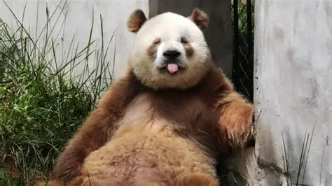

There are so many different types of Pandas in the world : Giant Panda, Red Panda, Qinling Panda!!!!!!
Red Pandas are often mistaked for a small bear, but they are actually a part of the racoon family. They live in the temperate forests of the Himalayas and Southeast Asia. They feed on bamboo leaves, shoots, and different fruits. Red pandas have long, bushy tails for balance and warmth, and they are excellent climbers.
Giants Pandas are found in bamboo forests of central China, they are black and white bears with fur that act as a camouflage in snowy habitats. They spend 10-16 hours a day eating up to 12 kg bamboo, but their digestive system is carnivore-like, so the sometimes eat eggs or small animals.
Qiling Pandas are rare and unique because they have dark brown and light brown fur instead of black and white. They live only in the Qinling Mountains of China and high elvations. This isolation cause the rare genetic mutation for the brown fur. The population is slowly growing from 200-300 in 2023.

Overall Pandas are very interesiting and cool animals that we should take care of and appreciate!